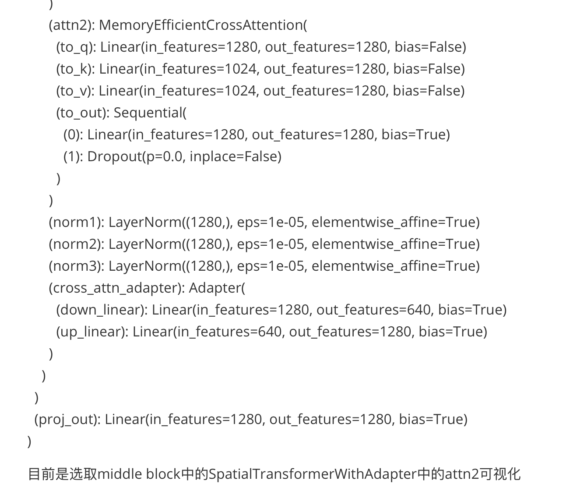
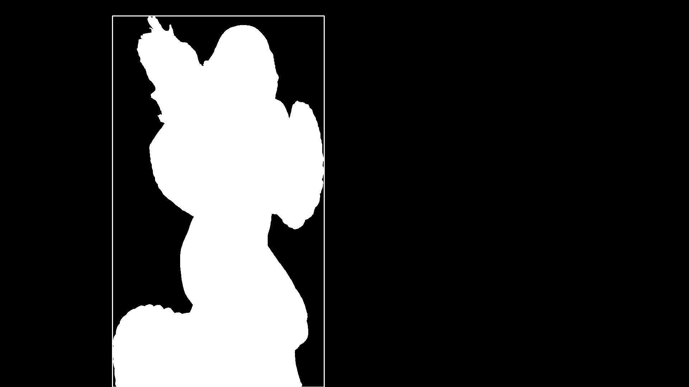
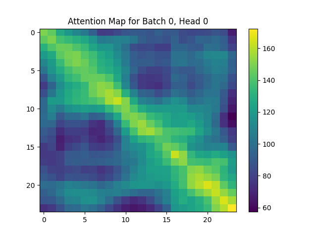

阅读CogVideoX，SparseCtrl等论文，其中CogVideoX采取的训练方式是分层（先大范围预训练再在过滤的高清数据集上finetune）；数据集选择WebVid-10M，OpenVid-1M；得到了+controlnet和canny的inference的结果
将数据集进行处理，根据去除主体的mask，提取对应的canny作为训练数据集
确定训练框架为CogVIdeoX+controlnet的训练框架，和师兄开会讨论过后，查看当前论文的数据集设置; 先确定CrossAttn的hw为256在最后几步的时候是否具有明显的物体轮廓
完成inference代码的测试，调研相关论文中数据集部分
阅读T2V模型+Control条件的论文，选择模型+数据集设置
在通院服务器上跑通 https://github.com/TheDenk/cogvideox-controlnet 的代码训练
将cross attention的控制加入网络未下采样之前，即分辨率大小为256*256时通过mask控制CrossAttn完成视频的生成，下面是两个生成的例子
从结果来看视频并没有实现位置和对应prompt的生成，可以进一步探索加入控制的网络结构位置和方式；对于学长那边的T2V模型训练的baseline进行调研
可视化UNet Middle Block中的Cross Attention Map，通过SAM获得原始视频的对应物体Mask的位置
目前是选取middle block中的SpatialTransformerWithAdapter中的attn2可视化
  整个UNet网络中encode block 16层，middle block 4层，decode block 16层，都有对应的CroAttn； 并且不同的去噪步map图也有差异，选取哪个timestep哪个block的CroAttn开始控制无法判断
可视化的Attention Map并没有呈现明显的物体轮廓，与参考论文中预期的结果有差异